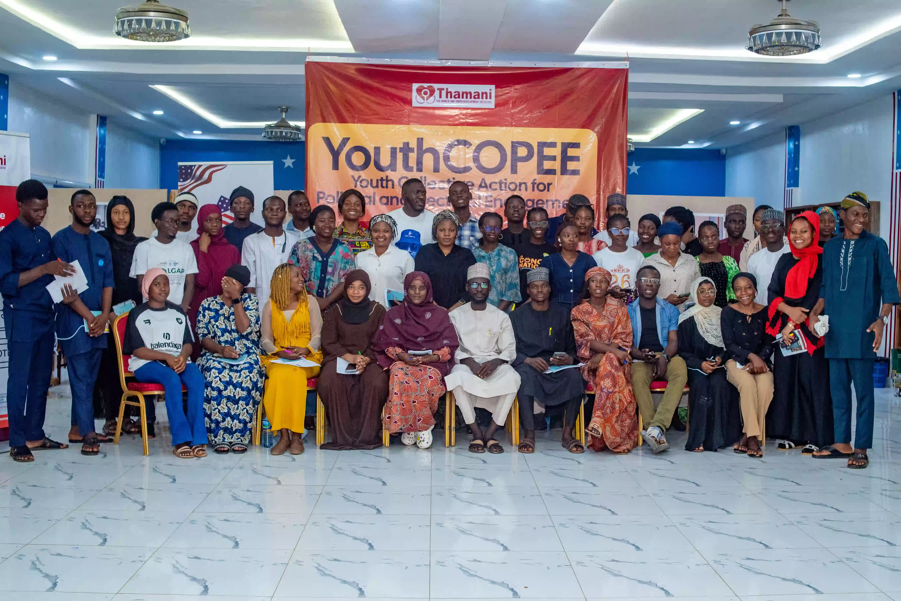
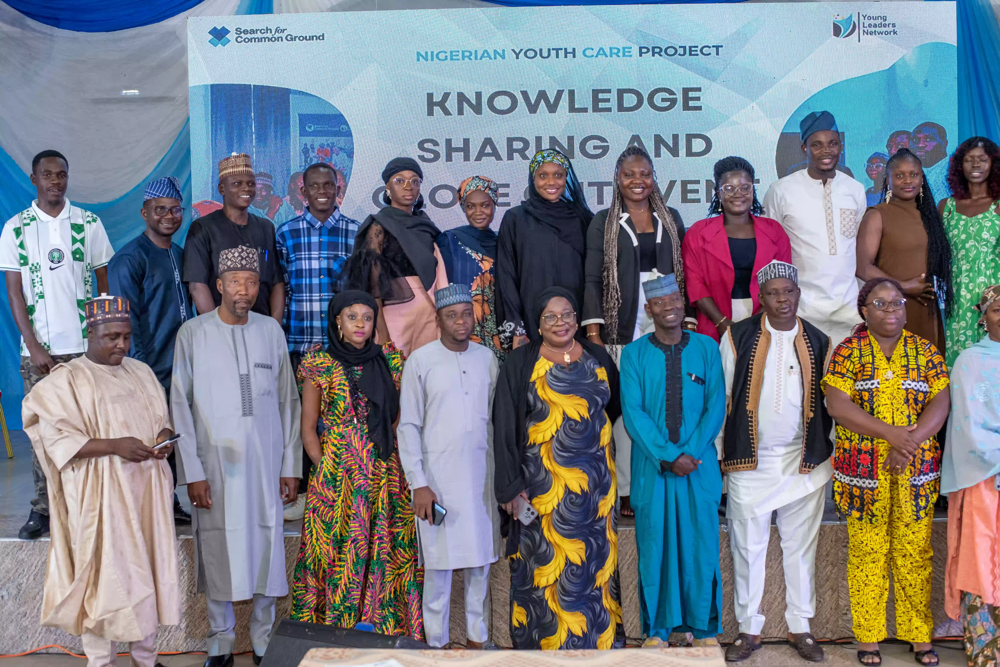
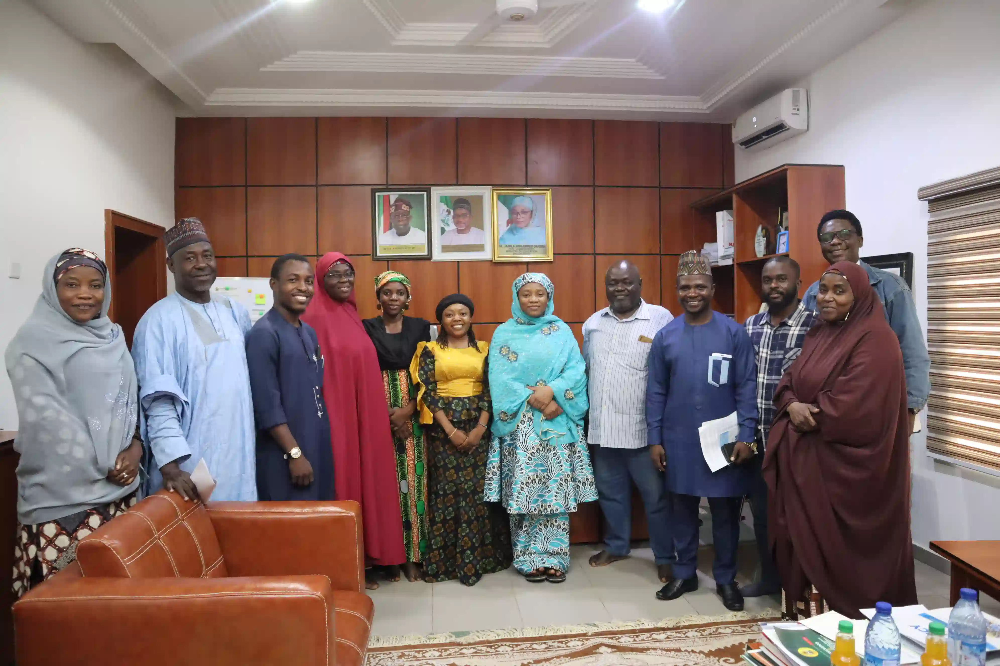
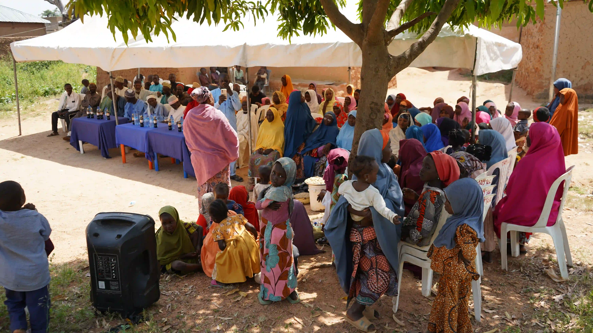
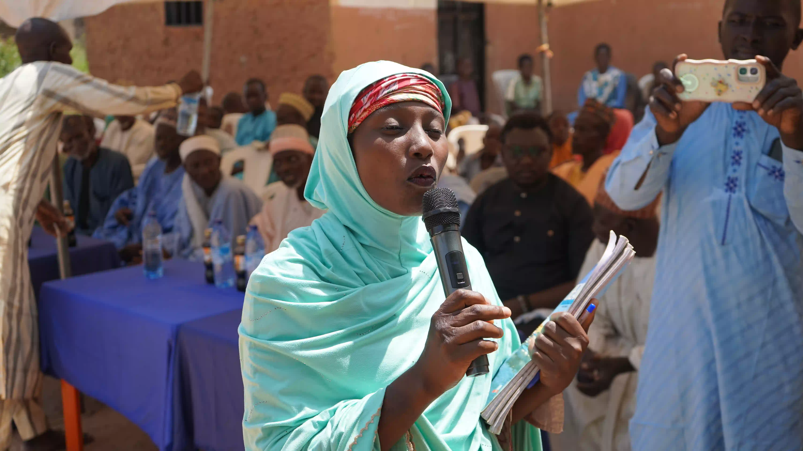

01
OUR PROGRAMMES
Turning ideas into community action.
THAMANI combines advocacy, capacity strengthening, policy engagement and grassroots action to support more peaceful, inclusive and resilient communities across Northern Nigeria.
WHAT WE DO
Programmes built around people.
THAMANI's programmes are designed to cultivate human potential, strengthen systems and create opportunities for women, young people and communities to lead sustainable change.
Our work integrates Gender Equality and Social Inclusion (GESI), education, governance, religious tolerance, gender-based violence prevention and conflict-sensitive approaches across interventions.
KEY PROGRAMMES
Initiatives making
an impact.
Explore THAMANI’s five flagship programme areas, then select a card to view the approach, activities, partners and results in more detail.
02
YouthCARE / FoRB
Peacebuilding, freedom of religion or belief and youth-led digital peacebuilding.
Explore details ↓
03
USAID-Palladium SCALE
Education, child protection, safe schools, policy advocacy and community accountability.
Explore details ↓
04
Village Savings & Loan Association (VSLA)
Women’s economic empowerment, financial inclusion and community resilience.
Explore details ↓
05
#HerVoice Project
Women’s leadership, gender justice, protection and gender-based violence prevention.
Explore details ↓
01 / YOUTHCOPEEYOUTH CIVIC ENGAGEMENT, DEMOCRATIC PARTICIPATION & DIGITAL RIGHTS
YouthCOPEE & digital civic action.
Through the Youth Collective Action for Political and Electoral Engagement (YouthCOPEE) and PowerShift for Digital Rights in Northern Nigeria, implemented with support from Yiaga Africa and funded by the National Endowment for Democracy (NED), THAMANI strengthens young people’s capacity to participate meaningfully in democratic processes, civic engagement, peacebuilding and advocacy.
The approach combines capacity-building bootcamps, youth-led civic actions, public dialogues, town halls, creative civic campaigns and digital engagement. Beyond training, young activists are supported to translate knowledge into collective action and connect across states for learning, collaboration and joint advocacy.
IMPLEMENTATION
Yiaga Africa
•
FUNDED BY
National Endowment for Democracy (NED)
View YouthCOPEE activity report ↗
60Youths trained on digital and protest rights
60Youths trained on participation, accountability and
electioneering advocacy
120Young civic activists reached through capacity-building
bootcamps
2States — Bauchi and Plateau

02 / YOUTHCAREPEACEBUILDING, FREEDOM OF RELIGION OR BELIEF & DIGITAL PEACEBUILDING
YouthCARE / FoRB for peaceful communities.
Through collaboration with Search for Common Ground and Young Leaders Network (YLN) under the YouthCARE project, THAMANI contributes to Freedom of Religion or Belief (FoRB), peaceful coexistence and constructive youth-religious engagement across Bauchi, Gombe and Plateau States.
THAMANI’s engagement includes Common Ground Approach training, Early Warning and Early Response capacity strengthening, social media listening, communities of practice, peer-learning exchanges, Ask Me Anything webinars and youth religious advocacy. Digital platforms and youth influencers are also used to counter hate speech and amplify positive narratives of peace and unity.
IN COLLABORATION WITH
Search for Common Ground
•
Young Leaders Network
22Youth-led and women-led CSOs reached
24Micro-influencers engaged
12Community social media stewards engaged
3States — Bauchi, Gombe and Plateau

03 / SCALEEDUCATION, CHILD PROTECTION & SAFE SCHOOLS
USAID-Palladium SCALE for safer learning.
Through the SCALE (Strengthening Civic Advocacy and Local Engagement) Project under the USAID/Palladium Safe Schools programme, THAMANI contributes to advocacy for children’s right to safe, quality and violence-free education in Bauchi, Yobe and Borno States.
A major component of the work supports domestication of the National Policy on Safe Schools and stronger state-level policy and institutional frameworks. THAMANI’s approach recognises that safe schools must be physically, socially and psychologically safe, with violence, discrimination and harmful practices addressed while the wellbeing of learners and teachers is prioritised.
PROGRAMME
USAID / Palladium Safe Schools
•
REACH
Bauchi, Yobe & Borno
View Safe Schools policy brief ↗
POLICY ADVOCACY & COMMUNITY ACCOUNTABILITY
Turning community voices into policy and institutional change.
THAMANI combines grassroots mobilisation, evidence generation, stakeholder engagement, coalition building and strategic communication to create constructive engagement between citizens and decision-makers.
Safe School Policies
Support for domestication of Safe School policies in Yobe and Bauchi States.
GBV Policy Recommendations
Development of Bauchi policy recommendations on the effect of gender-based violence on community development health services.
School Re-entry Policy
Policy support for pregnant and married adolescent girls in Bauchi State.

04 / VSLAECONOMIC EMPOWERMENT, VSLA & COMMUNITY RESILIENCE
Building financial resilience and agency.
THAMANI recognises that women’s empowerment cannot be separated from economic independence and household resilience. Its programming therefore integrates economic empowerment, climate-smart agriculture, financial inclusion and community-based livelihood approaches.
Through Village Savings and Loan Associations, women strengthen savings cultures, access community-based financial resources, improve livelihoods and build their capacity to respond to household and economic shocks. In communities such as Lushi, this work is combined with GBV prevention, leadership development, community dialogue and collective action.
7Women-led VSLA groups established and strengthened
175Women reached directly as active members
₦8M+Assets and member savings recorded
2Years of recorded savings and asset growth

05 / #HERVOICEWOMEN’S LEADERSHIP, GENDER JUSTICE & GBV PREVENTION
#HerVoice strengthening women’s agency.
Through women-focused programming supported by Urgent Action Fund–Africa (UAF-Africa), THAMANI works with grassroots women, community leaders, men and boys, and local institutions to strengthen awareness, accountability and collective action around gender-based violence and women’s rights.
#HerVoice creates platforms for grassroots women to strengthen their voices, leadership and engagement in addressing GBV and influencing community and institutional responses. Activities include community dialogues, stakeholder engagement, advocacy and stronger community-based mechanisms for prevention, accountability, referrals and response.
SUPPORTED BY
Urgent Action Fund–Africa (UAF-Africa)
View related GBV policy brief ↗
36Community women leaders trained on GBV referrals, prevention
and health support
1Truth & Justice Committee established
PARTNER WITH US
Stronger communities start with collective action.
Partner with THAMANI to support programmes that empower women, young people and communities to lead sustainable change.